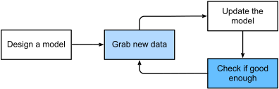

Machine Learning Basics
Chapter 1: Introduction
Based on "Dive into Deep Learning" by Zhang et al.
Instructor: Hafsteinn Einarsson
University of Iceland
What is Machine Learning?
The science of pattern recognition from data
Traditional Programming
How we've built software for decades
- Rigid set of rules
- Precise specifications
- Deterministic behavior
Example: E-Commerce Platform
Building with traditional rules:
- User interface in browser/mobile app
- Database for user state and transactions
- Business logic mapping circumstances to actions
Programming Business Logic
def add_to_cart(user_id, product_id):
# Explicit rule for every action
if cart_exists(user_id):
cart.add_item(product_id)
else:
create_cart(user_id)
cart.add_item(product_id)Handle every corner case explicitly
When Traditional Programming Works
- Well-defined rules
- Predictable scenarios
- Limited edge cases
- No adaptation needed
Perfect for deterministic tasks!
Test Your Understanding
When Traditional Programming Fails
Some problems resist explicit rules
Even the smartest programmers struggle with these...
Challenge Problems
- Weather Prediction: Tomorrow's weather from satellite images
- Question Answering: Understanding free-form text questions
- Person Detection: Identifying people in images
- Recommendations: Suggesting products users haven't seen
Why These Problems Are Hard
- Dynamic patterns: Rules change over time
- Extreme complexity: Millions of interactions
- Unknown principles: We don't know the rules
- Subconscious processing: Beyond conscious understanding
These require learning, not programming!
Test Your Understanding
The Machine Learning Approach
- Computer learns patterns from data
- No explicit rules needed
- Adapts to new situations
Machine learning is the study of algorithms that can learn from experience, also known as...
Programming with Data
"Machine Learning is programming with data instead of explicit instructions"
The paradigm shift that changed computing
Example: Wake Word Detection
How does "Hey Siri" or "OK Google" work?
Why Is Wake Word Detection Hard?
Consider the technical challenge:
- 44,000 samples per second
- Each sample = sound wave amplitude
- Must map raw audio → wake word detection
What rule could reliably detect "Alexa" in all these samples?
We don't know how to write such rules from scratch!
How Wake Word Detection Works
- Continuously listen to audio
- Extract audio features
- Check if pattern matches wake word
- Activate if confidence is high
Traditional Approach Attempt
def detect_wake_word(audio):
if audio_matches_pattern("ah-lek-sah"):
return True
elif audio_matches_pattern("uh-lek-suh"):
return True
# ... hundreds more rules?
return FalseToo many variations to code manually!
The ML Alternative
model = train_wake_word_detector(
positive_examples=["alexa_1.wav", "alexa_2.wav", ...],
negative_examples=["other_1.wav", "other_2.wav", ...]
)
def detect_wake_word(audio):
return model.predict(audio) > thresholdLearn patterns from examples instead!
Why This Approach is Powerful
- Handles accent variations
- Works in noisy environments
- Improves with more data
- No need to code every scenario
- Can generalize to new speakers
Test Your Understanding
When to Use Machine Learning
- Pattern recognition tasks
- Rules are too complex to write
- Need to adapt to changing data
- Have sufficient training data
ML transforms intractable coding problems into tractable data problems
Key Components of ML
The Four Pillars
- DataThe examples from which the model learns patterns. Quality and quantity of data often determine the success of ML projects.
- ModelsMathematical functions that transform inputs to outputs. Models have parameters that are adjusted during training.
- Objective FunctionsMeasures how well the model is performing. Also called loss functions, they guide the learning process.
- Optimization AlgorithmsMethods for adjusting model parameters to minimize the objective function. Gradient descent is the most common.
How They Work Together
An iterative process of improvement
Wake Word Example Revisited
Let's see how our four pillars work for "Alexa" detection
Problem: Audio snippet → "Yes/No" for wake word
Step 1: Define the Problem
- Input: Audio snippet (e.g., 1 second)
- Output: Binary decision (wake word or not)
- Model family: Neural network for audio
Must precisely define inputs and outputs first!
Step 2: Choose Model Family
The model has adjustable "knobs" (parameters)
- One setting → detects "Alexa"
- Different setting → could detect "Apricot"
- Same architecture, different parameters
Model family must be rich enough for the task
Step 3: The Training Process
- Start with random parameters (useless model)
- Grab labeled audio examples
- Adjust parameters to improve predictions
- Repeat until performance is satisfactory
This is "learning" - finding the right parameter settings
Programming with Data
Traditional
Write explicit rules for wake word detection
Machine Learning
Write program that learns from wake word examples
"Programming with data" instead of programming with rules
Different Tasks, Different Models
Similar tasks can share model families:
- "Alexa" detection ≈ "Apricot" detection
- Same architecture, different training
But fundamentally different tasks need different models:
- Image captioning needs vision + language models
- Translation needs sequence-to-sequence models
Test Your Understanding
Data
The Foundation of Machine Learning
The Data Revolution in Deep Learning
- More data = more powerful models
- Shift from small to big data transformed deep learning
- Many modern models require large datasets to work
- In small data regime, traditional methods often suffice
The success of deep learning is largely due to data availability
Data Quality: Garbage In, Garbage Out
- Having lots of data isn't enough - we need the right data
- Mistakes in data → mistakes in predictions
- Non-predictive features → learning failure
Critical Applications: Predictive policing, resume screening, lending decisions
The Danger of Biased Data
Representation Failures
Example: Skin cancer detection trained only on light skin
Historical Bias Amplification
Resume screening learning from biased hiring history
⚠️ This happens without intent or awareness from data scientists
Why Data Matters
- Models learn from examples
- Data quality determines model quality
- "Garbage in, garbage out"
Quality vs Quantity
- More data usually helps
- But quality is crucial
- Clean, labeled data is expensive
- Balance is key
Data Representation
How we encode information for models
- Images → Pixel values
- Text → Numerical vectors
- Audio → Frequency features
Example: Images as Numbers
A 3×3 grayscale image:
[[255, 128, 0],
[128, 64, 128],
[ 0, 128, 255]]Each number represents pixel brightness
Example: Text as Vectors
Words mapped to numbers:
"deep" → [0.2, -0.5, 0.8, ...]
"learning" → [-0.1, 0.7, 0.3, ...]Captures semantic relationships
Test Your Understanding
The Mushroom Example

Death cap - highly poisonous!
Why Mushroom Classification?
- Life-or-death importance
- Subtle visual differences
- Expert knowledge required
- Interesting ML use case
- Errors can be very costly
Traditional Approach
Field guides use complex decision trees:
- "If cap is white AND gills are free..."
- "If ring is present AND volva exists..."
- "If spore print is white AND..."
Problem: Too many rules, too many exceptions!
Feature Engineering
What features help identify poisonous mushrooms?
- CapThe top part of the mushroom, varies in color, texture, and shape: color, shape, surface texture
- GillsThe blade-like structures under the cap where spores are produced: attachment, spacing, color
- StemThe stalk supporting the cap, may have rings or bulbs: color, ring, bulb shape
- HabitatWhere the mushroom grows - soil type, nearby trees, season: location, season, substrate
Data Collection Challenges
- Dangerous to collect poisonous samples
- Seasonal availability
- Geographic variation
- Need expert verification
- Imbalanced data (few deadly species)
ML Solution Benefits
- Learns subtle patterns humans miss
- Handles complex feature interactions
- Improves with more data
- Can provide confidence scores
ML can save lives by making expert knowledge accessible, but the benefit needs to outweigh the cost of mistakes (e.g. false negatives when someone is poisoned)
Test Your Understanding
Models
The Learning Structures
What is a Model?
- A mathematical function
- Transforms inputs to outputs
- Has adjustable parameters
Models as Function Approximators
Goal: Learn function f where
y = f(x)
Given input x, predict output y
Notation: True vs Predicted Values
True Value
- Actual label in data
- Ground truth
- What we want to predict
Predicted Value
(pronounced "y-hat")
- Model's prediction
- Output of f(x)
- Our estimate of y
Loss measures the difference: L(y, ŷ)
Parameters and Weights
- Parameters define the model's behavior
- Adjusted during training
- Capture learned patterns
Simple Linear Model
def linear_model(x, w, b):
return w * x + b- w: weight (slope)
- b: bias (intercept)
- Both are learned from data
From Simple to Deep Models
Simple Models
Perfect for appropriately simple problems
Linear regression, decision trees, basic classifiers
Deep Models
Many successive transformations chained together
The "deep" in deep learning = multiple layers
Complex problems stretch the limits of classical methods
Neural Network Preview
Multiple layers of transformations
Model Capacity
- Ability to fit complex patterns
- More parameters = higher capacity
- Balance with overfitting risk
Choosing the Right Model
- Problem complexity
- Available data
- Computational resources
- Interpretability needs
Models: Key Insights
- Functions with learnable parameters
- Transform inputs to predictions
- Capacity must match problem
Test Your Understanding
Objective Functions
Measuring Success
Why We Need Objective Functions
Machine learning = learning from experience
But what constitutes "improvement"?
- Different people might disagree on what's better
- We need formal, mathematical measures
- Enter: Objective Functions
Convention: Lower is better (hence "loss functions")
What Are We Optimizing?
- Need to measure model performance
- Quantify "how wrong" predictions are
- Guide parameter updates
Loss Functions Explained
Loss = measure of prediction error
Lower loss = better predictions
Goal: minimize loss
Common Loss Functions
Regression: Squared Error
Square of (prediction - true value)
Easy to optimize, differentiable
Classification: Error Rate
Fraction of incorrect predictions
Hard to optimize directly → use surrogates
Mean Squared Error
For regression problems:
Penalizes large errors more
Cross-Entropy Loss
For classification problems:
Measures prediction confidence
Loss During Training vs Testing
Loss = function of model parameters
Training Loss
Like practice exam scores
Used to update parameters
Test Loss
Like final exam scores
Measures real performance
⚠️ Good training score ≠ Good test score (overfitting)
Training vs Validation Loss
- Training loss: on training data
- Validation loss: on held-out data
- Gap indicates overfitting
Overfitting Preview
When overfitting, the model memorizes instead of generalizing
Objective Functions: Summary
- Quantify model performance
- Different losses for different tasks
- Balance training and generalization
Test Your Understanding
Optimization Algorithms
Finding the Best Parameters
Finding the Best Parameters
- Start with random parameters
- Measure performance (loss)
- Adjust to improve
- Repeat until convergence
The Optimization Landscape
Finding the lowest point
Gradient Descent Basics
- Compute gradient (slope)
- Step in opposite direction
- Like walking downhill in fog
The ML Training Loop
Learning Rate Importance
- Too small: slow convergence
- Too large: might overshoot
- Critical hyperparameter
Convergence
- Loss stops decreasing
- Parameters stabilize
- Model has "learned"
Optimization: Key Points
- Iterative improvement process
- Gradient descent is fundamental
- Many variations exist
Test Your Understanding
Types of Machine Learning
Different Learning Paradigms
Three Main Paradigms
- Supervised LearningLearning from labeled examples where we know the correct answers
- Unsupervised LearningFinding patterns in data without labels
- Reinforcement LearningLearning through interaction and rewards
Overview Comparison
| Type | Data | Goal |
|---|---|---|
| Supervised | Labeled | Predict labels |
| Unsupervised | Unlabeled | Find structure |
| Reinforcement | Rewards | Maximize reward |
Test Your Understanding
Supervised Learning
Learning from Examples
What is Supervised Learning?
- Given: input-output pairs
- Learn: mapping function
- Goal: predict new outputs
Input-Output Pairs
Training data format:
(image of cat) → "cat"
(image of dog) → "dog"
(house features) → $500,000
(email text) → "spam"Test Your Understanding
Regression
Predicting Continuous Values
What is Regression?
- Output is a continuous number
- Examples: prices, temperatures, scores
- Goal: minimize prediction error
Regression = predicting "how much" or "how many"
Real-World Regression Tasks
🏠 Real Estate
- House prices
- Rental rates
- Property valuations
📈 Finance
- Stock prices
- Risk scores
- Loan amounts
🌡️ Science
- Temperature prediction
- Chemical concentrations
- Growth rates
⚡ Engineering
- Power consumption
- Load forecasting
- Performance metrics
Linear Regression: The Foundation
- w: weight (slope) - relationship strength
- b: bias (intercept) - baseline value
- ŷ: predicted value
Multiple features: $\hat{y} = w_1x_1 + w_2x_2 + ... + b$
Example: House Price Prediction
Each point is a house, line shows learned relationship
Measuring Regression Performance
Mean Squared Error (MSE)
- Squares the errors (penalizes large errors more)
- Always positive
- Lower is better
Other metrics: MAEMean Absolute Error: Average of absolute differences between predictions and actual values. Less sensitive to outliers than MSE. (Mean Absolute Error), R² scoreCoefficient of Determination: Proportion of variance in the dependent variable predictable from the independent variable(s). Ranges from 0 to 1, where 1 means perfect prediction.
Beyond Linear: Polynomial Regression
When relationships are non-linear:
- Can fit curves, not just lines
- More flexible but risk of overfitting
- Need to choose degree carefully
Test Your Understanding
Classification
Predicting Categories
What is Classification?
- Output is a discrete category/class
- Examples: spam/not spam, digit recognition
- Can be binary or multi-class
Classification = predicting "which type" or "what category"
Binary Classification
Two possible outcomes:
✓ Positive Class
- Email is spam
- Transaction is fraud
- Patient has disease
- Image contains cat
✗ Negative Class
- Email is not spam
- Transaction is legitimate
- Patient is healthy
- Image doesn't contain cat
Output: probability between 0 and 1
Multi-Class Classification
More than two categories:

Examples:
- Digit recognition (0-9)
- Language detection (100+ languages)
- Product categories (electronics, clothing, food...)
- Disease diagnosis (multiple conditions)
From Scores to Probabilities
The Softmax Function
Converts raw scores to probabilities:
Example:
Scores: [2.0, 1.0, 0.1]
Probabilities: [0.66, 0.24, 0.10]
Prediction: Class 0 (highest probability)All probabilities sum to 1.0
Decision Boundaries
How classifiers separate classes:
Linear boundaries for simple problems, non-linear for complex ones
Measuring Classification Performance
Accuracy
% of correct predictions
Good for balanced datasets
Precision
% of positive predictions that are correct
Important when false positives are costly
Recall
% of actual positives correctly identified
Important when false negatives are costly
F1 Score
Harmonic mean of precision and recall
Balanced metric
Confusion Matrix
Visualizing classification errors:
| Predicted | ||
|---|---|---|
| Actual | True Positive | False Positive |
| False Negative | True Negative | |
Shows exactly where the model makes mistakes
Test Your Understanding
Tagging
Multi-Label Problems
Multi-Label vs Multi-Class
Multi-Class
One label per item
- Animal: cat OR dog OR bird
- Sentiment: positive OR negative
- Digit: 0 OR 1 OR ... OR 9
Multi-Label
Multiple labels per item
- Movie: action AND comedy AND sci-fi
- Article: tech AND business AND AI
- Image: person AND car AND tree
Labels are not mutually exclusive in multi-label problems
Real-World Tagging Applications
📽️ Content Tagging
Netflix movie: [Drama, Thriller, Based on Book, Award-Winning]
🏥 Medical Diagnosis
Patient conditions: [Diabetes, Hypertension, Obesity]
📸 Image Annotation
Photo tags: [Sunset, Beach, People, Vacation, Summer]
📰 Document Classification
Research paper: [Machine Learning, Computer Vision, Neural Networks]
How Multi-Label Works
Independent binary classifiers for each label:
Input: Movie description
Output probabilities:
- Action: 0.85 ✓
- Comedy: 0.72 ✓
- Drama: 0.23 ✗
- Horror: 0.05 ✗
- Sci-Fi: 0.91 ✓
Threshold: 0.5
Tags: [Action, Comedy, Sci-Fi]Each label has its own probability threshold
Challenges in Multi-Label Learning
- Label Correlation: Some labels often appear together
- Label Imbalance: Some tags are rare
- Threshold Selection: Different thresholds for different labels
- Evaluation Complexity: Partial matches complicate metrics
Example: "Action" and "Adventure" often co-occur in movies
Test Your Understanding
Search and Ranking
Ordering Results by Relevance
The Ranking Problem
Not just finding results, but ordering them:
Query: "machine learning"
Challenge: Millions of results - which first?
- Most relevant at the top
- Personalized to user
- Consider multiple factors
Users rarely look past the first page!
Learning to Rank
ML learns what makes results relevant:
Input Features
- Query-document similarity
- Document quality/authority
- User location/history
- Freshness of content
Training Signal
- Click-through rates
- Dwell time on page
- Bounce rates
- Manual relevance labels
Applications Beyond Web Search
🛍️ E-commerce Product Search
Rank products by relevance, price, reviews, availability
📧 Email Priority Inbox
Rank emails by importance to user
📱 App Store Rankings
Rank apps by relevance, quality, popularity
💼 Job Matching
Rank candidates or positions by fit
Test Your Understanding
Recommender Systems
Personalized Suggestions
Why Recommendations Matter

- 35% of Amazon purchases from recommendations
- 75% of Netflix viewing from recommendations
- Crucial for user engagement
Two Main Approaches
Collaborative Filtering
"Users like you also liked..."
- Based on user behavior
- Find similar users
- Recommend their favorites
- No content analysis needed
Content-Based
"Because you liked X..."
- Analyze item features
- Find similar items
- Match user preferences
- Works for new items
Modern systems combine both approaches
The Cold Start Problem
How to recommend when you have no data?
- New Users: No history to learn from
- New Items: No ratings or interactions
Solutions:
- Ask for preferences during onboarding
- Use demographic information
- Show popular items initially
- Use content features for new items
Matrix Factorization
Core technique for collaborative filtering:
User-Item matrix → User factors × Item factors
![Matrix factorization diagram]()
Learns latent features automatically
The Danger of Recommendation Rabbit Holes
Filter Bubbles
Users only see content similar to past behavior
Limits exposure to diverse perspectives
Echo Chambers
Reinforces existing beliefs and biases
Can amplify misinformation
Addiction Patterns
Optimizing for engagement can exploit psychology
Particularly harmful for vulnerable users
⚠️ Recommender systems shape what billions of people see online
Test Your Understanding
Sequence Learning
Temporal Dependencies
When Order Matters
Sequential data is everywhere:
- Language: Word order determines meaning
- Time Series: Stock prices, weather patterns
- Audio/Video: Temporal progression
- User Behavior: Click sequences, navigation paths
"Time is an arrow" ≠ "Arrow an is time"
Challenges of Sequential Data
- Variable Length: Sequences can be any length
- Long-Range Dependencies: Early events affect later ones
- Temporal Patterns: Trends, seasonality, cycles
- Context Window: How much history to consider?
Types of Sequence Problems
One-to-Many
Image → Caption (words)
Many-to-One
Sentence → Sentiment
Many-to-Many (Synchronized)
Video → Frame labels
Many-to-Many (Sequence-to-Sequence)
English text → French text
Example: Speech Recognition

Audio waveform → Text transcription
- Variable length input and output
- Temporal alignment challenges
- Context helps disambiguate
Recurrent Neural Networks Preview
Networks with memory:
For each time step t:
hidden_state[t] = f(input[t], hidden_state[t-1])
output[t] = g(hidden_state[t])- Maintains state across time steps
- Can handle variable length sequences
- Foundation for LSTMsLong Short-Term Memory: RNN variant with gates (forget, input, output) to control information flow, solving vanishing gradient problem and GRUsGated Recurrent Units: Simplified LSTM with only reset and update gates, fewer parameters but similar performance
Later evolved into Transformers (ChatGPT, etc.)
Test Your Understanding
Unsupervised Learning
Finding Hidden Patterns
Learning Without Labels
- No correct answers provided
- Find structure in data
- Often used for exploration
Clustering Example
Groups emerge naturally
Dimensionality Reduction
- Compress high-dimensional data
- Preserve important information
- Enable visualization
Masked Language Modeling
Foundation of modern NLP (BERT, GPT)
The cat sat on the [MASK] → mat
- Hide parts of the input text
- Model learns to predict missing words
- No manual labels needed!
Powers ChatGPT, Claude, and other language models
Masked Image Modeling
Self-supervised learning for computer vision
🖼️ → 🖼️❓❓🖼️ → 🖼️🖼️🖼️🖼️
Original → Masked → Reconstructed
- Mask random patches of images
- Model learns visual representations
- Used in MAE, SimMIM, and others
Achieves state-of-the-art with less labeled data
Self-Supervised Learning
- Create labels from data itself
- Example: predict next word
- Foundation of modern NLP
Unsupervised Applications
- Customer segmentation
- Anomaly detection
- Data compression
- Feature learning
Test Your Understanding
Reinforcement Learning
Learning from Interaction
Learning from Interaction
- Agent takes actions
- Environment provides rewards
- Learn optimal behavior
Agent and Environment
Continuous feedback loop
Rewards and Actions
- Positive rewards encourage behavior
- Negative rewards discourage
- Learn through trial and error
Example: Game Playing
- Actions: game moves
- Rewards: points/winning
- Learn strategy over time
Real-World Applications
- Robotics control
- Resource management
- Recommendation systems
- Autonomous driving
Test Your Understanding
Historical Roots
Where It All Began
Early Measurement

Jacob Köbel (1535): averaging measurements
Early Statistical Methods
- Linear regression (1805)
- Least squares method
- Foundation for ML
Neural Network History
- 1943: McCulloch-Pitts neuronFirst mathematical model of artificial neuron, using binary threshold logic
- 1958: PerceptronRosenblatt's linear classifier that could learn from examples
- 1986: BackpropagationAlgorithm to efficiently compute gradients in multi-layer networks
- 2012: Deep learning revolutionAlexNet wins ImageNet by huge margin, starting the modern deep learning era
The Deep Learning Era
- Enabled by GPUs
- Big data availability
- Algorithmic improvements
- Transforming every field
Test Your Understanding
Key Concepts Recap
- ML = Programming with data
- Four components: data, models, objectives, optimization
- Three paradigms: supervised, unsupervised, reinforcement
- Wide range of applications
What's Next?
- Mathematical foundations
- Linear models in depth
- Neural network basics
- Hands-on implementation